TUTORIAL 1
Estructura
Reticular
Este tutorial trata sobre la modelación, análisis y diseño de una
estructura reticular sencilla, utilizando Treu Structure, con la finalidad de
presentar una breve introducción a algunas de las capacidades de dicha
solución.
El espacio de trabajo se compone de 3 secciones principalmente, como
se puede observar en la figura 1. Es importante familiarizarse con los
diferentes componentes de la solución, para poder explotar toda la
funcionalidad que tiene.
La barra de menús y barras de herramientas, el panel de Nodos y Barras,
y el área del trabajo.
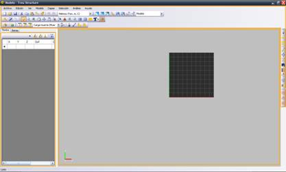
Figura 1.
La Barra de menús y Barras de herramientas es donde se
encuentran la mayoría de los comandos. Después de analizar una estructura
aparecerá una nueva barra de herramientas de resultados, desde donde se podrán
ver las deformaciones de los diferentes casos de análisis, animar los modos de
vibrar (si se realizó análisis dinámico) y ver los esfuerzos de la estructura.
El Panel de Nodos y Barras
presenta una interfaz alterna para la entrada y edición de la información del
modelo. Aquí se pueden editar las diferentes propiedades de forma individual o copiar
una propiedad en todos los elementos seleccionados con un solo click.
El Área de Modelo es donde
se visualizará el modelo y sus resultados de forma gráfica e interactiva.
Cuenta con herramientas de snap
inteligente, opciones de visualización y de presentación de información.
A continuación vamos a generar un modelo reticular de 5 crujías en la
dirección “X” global, 6 crujías en la dirección “Y” global, y de 10 niveles.
1.
Se pulsa la
herramienta MALLA , donde aparece otra pantalla que dice:
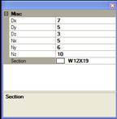
Barra de propiedades de comando
Nx = Número de crujías en la dirección “X” global
Ny = Número de crujías en la dirección “Y” global
Nz = Número de niveles en la dirección “Z” global
Dx = Distancia de vigas en dirección “X” = 7.00 m
Dy = Distancia de vigas en dirección “Y” = 5.00 m
Dz = Altura de entrepiso. = 3.00 m
Sección = Sección tipo que se propone inicialmente. = W12”x19Lb/ft
2.
Se localiza un
punto que puede ser el origen de coordenadas P(0,0,0), se da doble clik en
dicho punto y aparece el modelo dibujado en 3D.
3.
Se puede girar
usando la herramienta Rotar , y se puede mover usando la herramienta Pan , y se puede señalar toda la estructura con la herramienta
Seleccionar todo 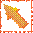, y se puede renderear con la herramienta Sombreado , y se puede acercar o alejar usando la herramienta Acercamiento , o con la rueda central del mouse.
4.
Se pueden editar
las secciones tanto de trabes como de columnas, para lo cual se deben señalar
las vigas o las columnas de igual sección, y se cambia la sección en el grid de
las barras donde dice Sección, se da doble click , se seleciona la nueva
sección, y se aprieta el botón con la flechita hacia abajo para que se cambie
la sección en todas las barras señaladas y que aparecen activas en el grid, por
ejemplo la sección W 12” x 30 lb/ft
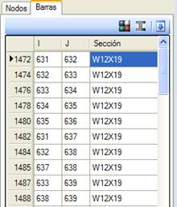
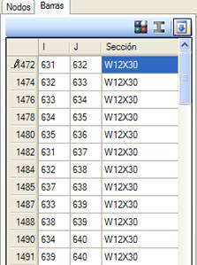
5.
Se van a agregar
las cargas en las vigas señaladas, entonces agrandando la ventana del grid de
las barras, aparece la columna Cargas, como se observa en la figura, y se da
doble click y aparece una pantalla de definición de cargas:
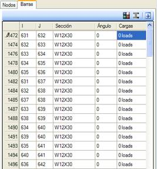
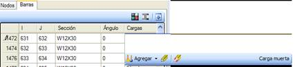
Dando click en Agregar, aparece la pantalla para definir carga
concentrada o carga distribuida.
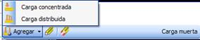
Si damos Carga concentrada, aparece la pantalla:
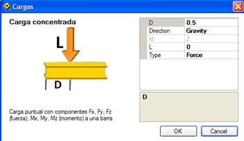
Si damos Carga distribuida, aparece la pantalla:
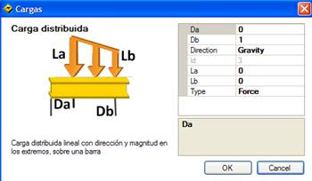
6.
Falta dar las
condiciones de apoyo, que por default el programa define como restringidos los
desplazamientos en “X”, “Y”, “Z” y en libres los giros alrededor de los ejes
“X”, “Y”, “Z”, si se quieren modificar, se seleccionan los nodos a modificar y
se da doble click sobre uno de los nodos en la columna de grados de libertad, y
aparece la siguiente pantalla:
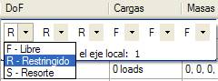
Se elige el grado de libertad deseado, y con las flechas se mueve uno
de izquierda a derecha o viceversa, y se teclea la letra F, R, o S.
7.
Una vez dadas la
geometría, secciones, cargas y apoyos, se procede al análisis de la estructura,
pulsando el botón de Analizar
8.
Una vez concluido
el análisis puede revisar los resultados con las siguientes herramientas.
La lista de casos de resultados presenta
los resultados para los casos de carga, modos de vibrar o espectro de respuesta
que se hayan mandado analizar. A su lado derecho tenemos los botones para ver
la estructura deformada/sin deformar, en modo de animación, visualización de
esfuerzos, visualización del diseño, visualización de elementos mecánicos (axial,
cortantes, torsión y momentos). Por último se encuentra el botón de generación
de reportes, con lo que podrá exportar sus resultados en diversos formatos como
PDF o DOC.